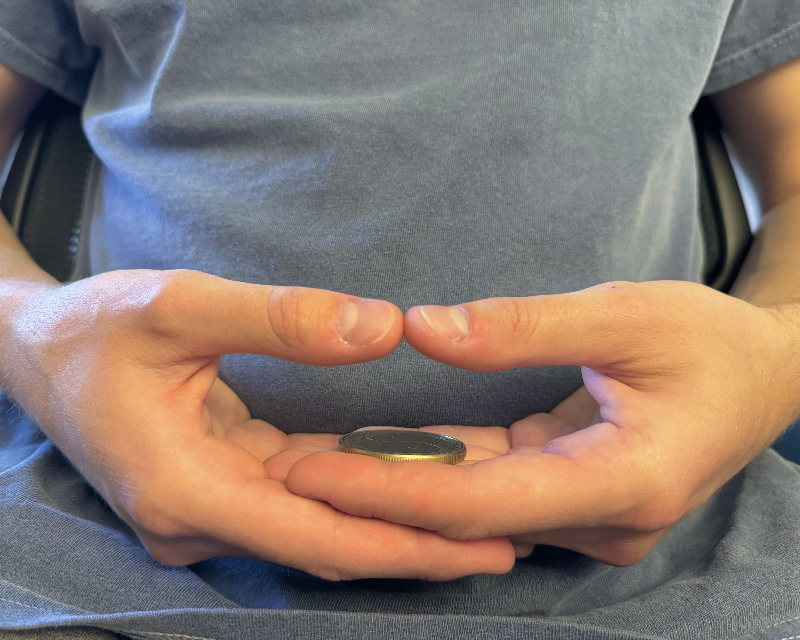
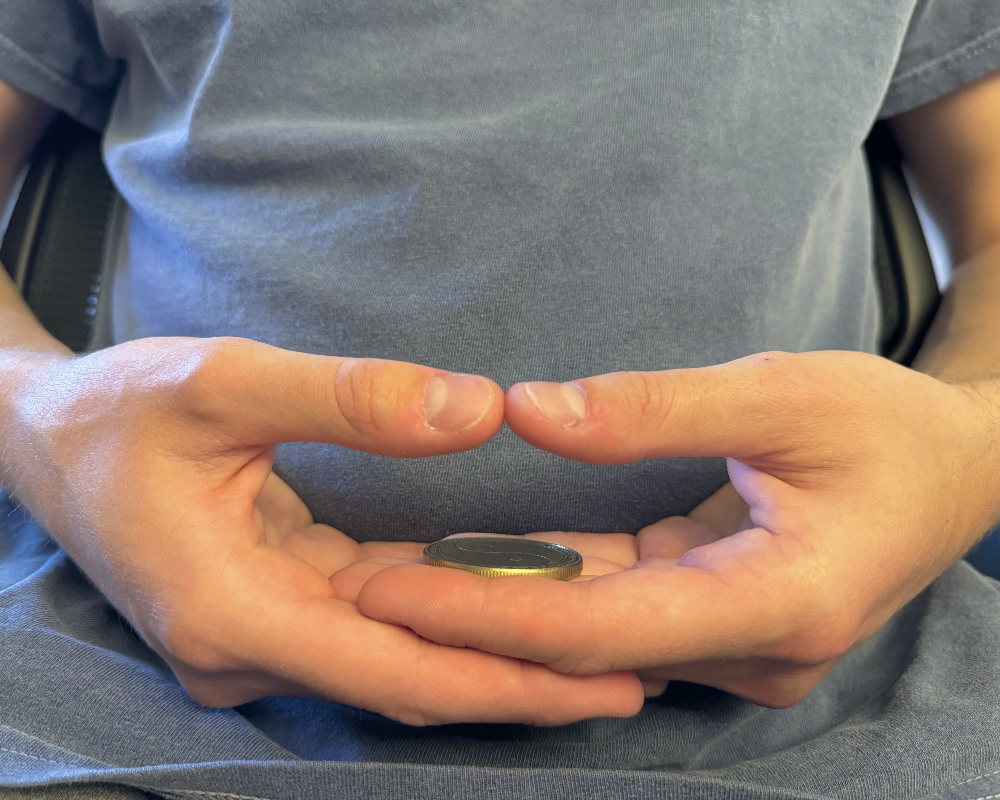

Pacific Prana Path explores the fundamentals and philosophy of yoga, highlighting its significance for Cal Poly students. In the vibrant culture of San Luis Obispo, many students embrace yoga, attending classes and even becoming certified instructors.
Related to Pacific Prana Yogi, this blog delves into the rich traditions and principles of yoga, offering insights and practices that extend beyond the mat, enriching the lives of students and anyone eager to learn.
The 8 Limbs of Yoga
The 8 limbs of yoga, rooted in ancient wisdom, guide us through ethical living, self-discipline, physical postures, breath control, sensory withdrawal, concentration, meditation and ultimately, union with the divine. Together, they offer a holistic path to inner peace and self-realization. These are the core fundamentals for yogis to embody on and off the mat.

 
